After completing this lesson, you will be able to:
In typical FME workflows with discrete data, you may load, sort, and group the data before analyzing it. In streaming workflows, data is continuous and possibly infinite, so you can't load all the data before processing and analyzing it. The TimeWindower transformer groups data into windows by adding a Window ID attribute to the data based on the time the transformer receives the data record or the record's timestamp. Once you break the data into groups, you may process and analyze it as if it were discrete data.
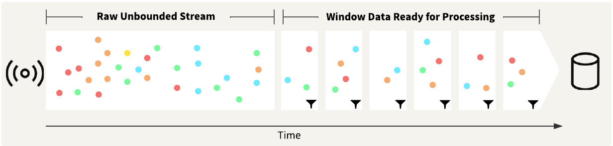
The TimeWindower parameters control how FME groups the data records, when each interval begins, and how long each interval is. The time units options range from seconds to days. The Window ID Type refers to how FME documents each record within a window, either by assigning a window ID number or by using the timestamp that marks the window's beginning or end. You may also control whether the first window begins when the workspace starts, when the first record is received, or at a specific timestamp.
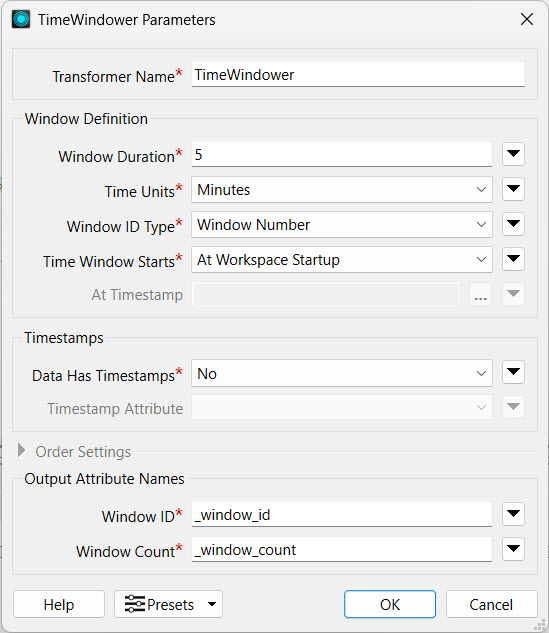
The TimeWindower assigns a new attribute with a value identifying which window the record belongs to. You will likely process the data further by grouping it by window. The TimeWindower does not control the number of records in each window - the records are only grouped by time, not by count. You can have high volumes of records in one window, followed by a window with no records at all, depending on the velocity and rate of the streaming data.
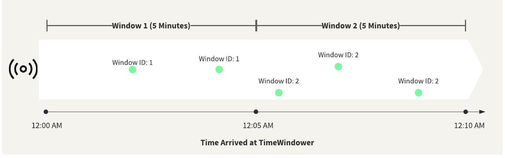
In many cases, there may be a slight delay between when a sensor detects or submits data and when the data arrives at FME, which may result in FME receiving and processing data records out of order.
If your data includes timestamps as an attribute, you can enable this option in the TimeWindower. Then, instead of windowing the data from the time the record arrives to the TimeWindower, it windows the data using the timestamp attribute value assigned to each record. The Order Settings enforce the order of the records through the output port. Records that do not follow the specified window ordering are sent to an OutOfSequence port unless they arrive within the Tolerance Interval. If a record arrives outside its window but within the tolerance amount, FME still accepts it and assigns it to the correct window. If a record is too early or too late, meaning it falls outside the tolerance time amount, the TimeWindower directs it to the OutOfSequence port.
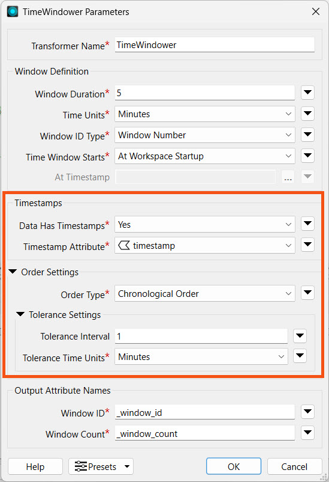
For example, with a window duration of 5 minutes and a tolerance interval set to 1 minute, any records that arrive within a minute before or after their correct window will still be accepted into the window. The red record with the 12:03 AM timestamp should be in Window 1, but the TimeWindower did not receive it until Window 2 began. Since it is over the 1-minute tolerance interval, the TimeWindower will route the record to the OutOfSequence port.
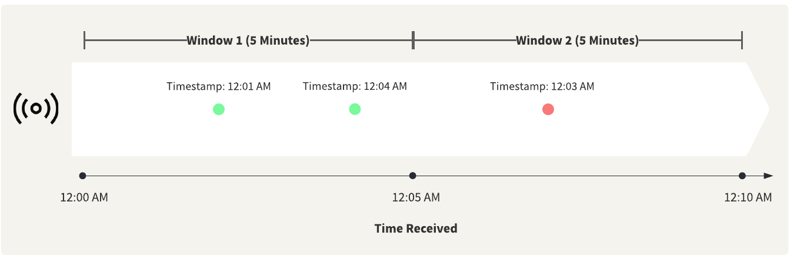
So far, you've helped Jennifer identify trucks outside the City of Vancouver boundary. Each vehicle reports its location roughly every 3 seconds. When you run your workspace in Stream mode, it may produce a data record for each vehicle outside the city boundary every 3 seconds. If you configured alerts for each record, that would result in almost constant alert pings for a truck outside the city. To avoid this, Jennifer set a one-minute threshold, which you will use to window the data so an alert sends only once per minute for each vehicle.
In this exercise, you will:
Continue with the same workspace open in FME Workbench from the previous exercise.
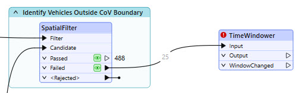
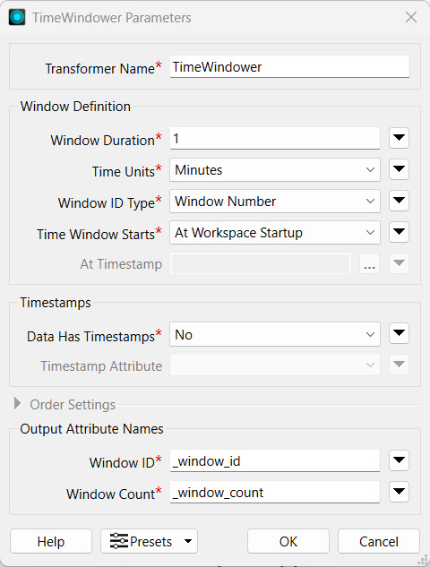
The Timestamps function in TimeWindower is used to identify out-of-sequence records and reorder them chronologically within a specified tolerance interval. Although our stream data has a timestamp attribute, we don't need to use it for this scenario because it doesn't matter in this scenario if our data is out of order. We will sample the data later to just get one record per vehicle in each time window. Also, because our stream is simulated, our timestamps are not quiet accurate - they are dated in the past.
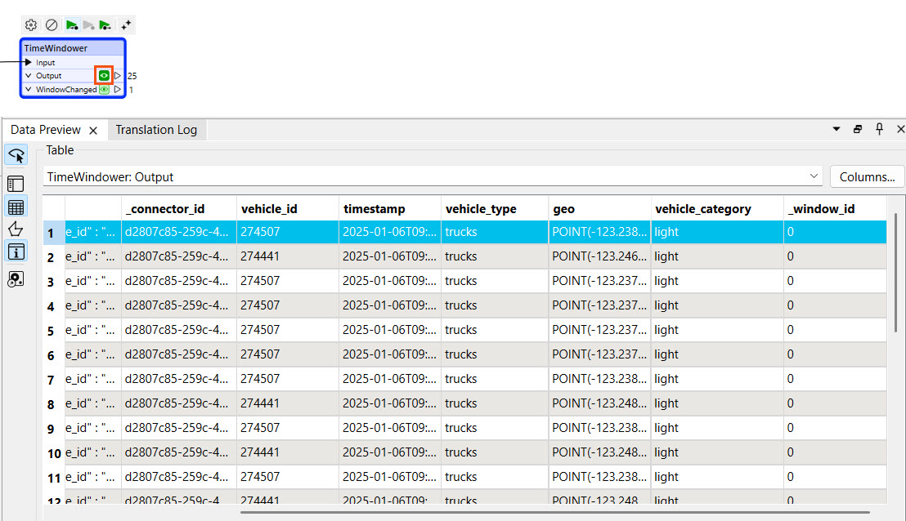
The TimeWindower adds a _window_id attribute to each record, and multiple records exist for each unique vehicle_id. The batched data likely did not capture enough data to span one minute, so the _window_id will not update. When you run the workspace in Stream mode later, you'll see it change after each minute in the TimeWindower's data cache.
Within each time window, you only need the latest location for each truck, and multiple data records can exist for a single truck in the same window. A Sampler transformer lets you query each truck's last known location within the window, but first you need to sort the data by vehicle_id and timestamp.
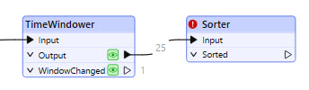
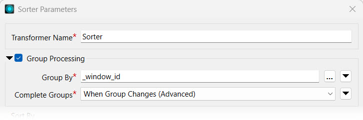
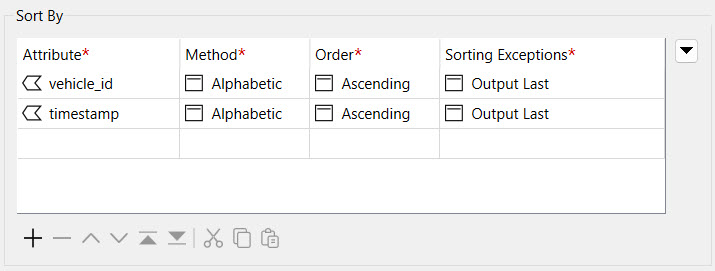
Now that your data is sorted chronologically and by vehicle_id, a Sampler transformer lets you query each truck's last known location within the window.
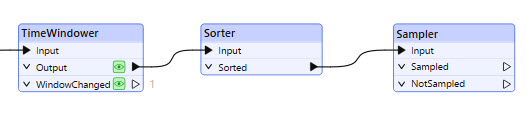
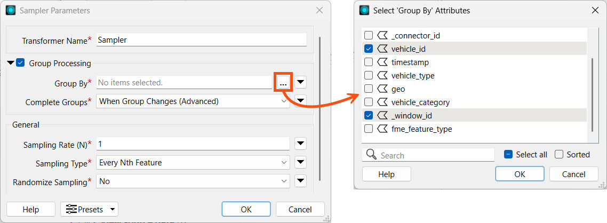
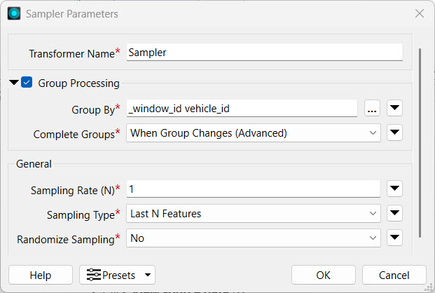
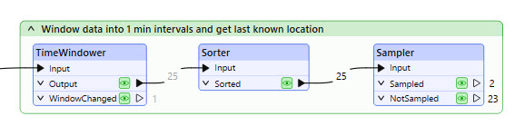
You may use Run To This on the Sampler to see how the batched data is sorted and sampled; however, this likely will not include a time window change. To see how it works with multiple time windows, switch to Stream mode.
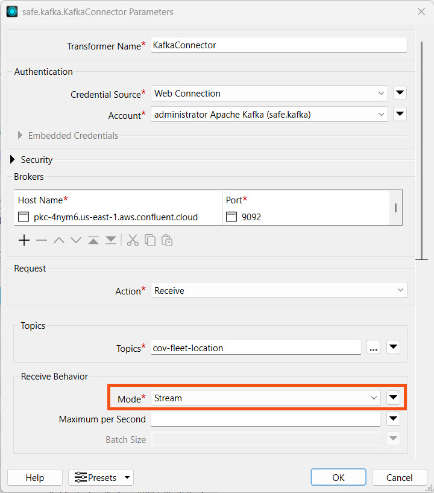
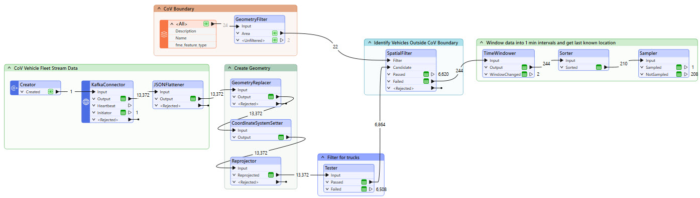
Remember that the TimeWindower groups data into one-minute windows and the Sorter sorts the data in each window. To receive records from the Sorter to the Sampler, you must let the workspace run for at least one minute to complete the first time window.
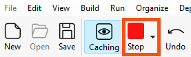
Now that you have filtered and grouped your stream data records, you will configure an alert to trigger every minute for trucks outside Vancouver next.